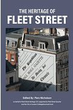
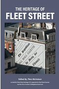

Fleet Street Quarter is proud to announce that it is sponsoring a blister pack collection scheme in Fleet Street. The collection will be run by www.spurt.uk who have successfully developed this schcem in Salisbury.
Most of the pills we get
from pharmacies come in blister packs, whch are difficult and expnensive
to recycle. So most of them end up in landfill. The spurt.uk schemeis
citizen-run; a local group donates a starter cbox at a cost of £108,
and will accept all empty blister packs from local residents at a cost
of £1 per 50 packs; the money collected is used to buy the next
box in two months time. The £108 is the price which specialist recyclers
have to charge because the value of the recycled products is much lower
that the cost of the recycling. There are more details on www.spurt.uk
The first collection will be on Wednesday 26 February
from 10am to 2pm. This will be followed by furtherecollections at two-month
inteervals, if the scheme gets the support we expect.
-----------------------------------------------------------------------------------------------
www.spurt.uk is a citizens initiative for sustainable recycling which originated in Salisbury and is spreading to other areas
--------------------------------------------------------------------------------------------------
Fleet Street Quarter is the local Business Improvement District, who are
working to improve and enhance the local environemt
------------------------------------------------------------------------------------------------
Fleet Street Heritage CIC are keeping the local heritage alive through
the Heritage Exhibition in Wine Office Court and their Heritage book,
(see www.fleetstreet heritage.co.uk for deails)
------------------------------------------------------------------------------------------------
(